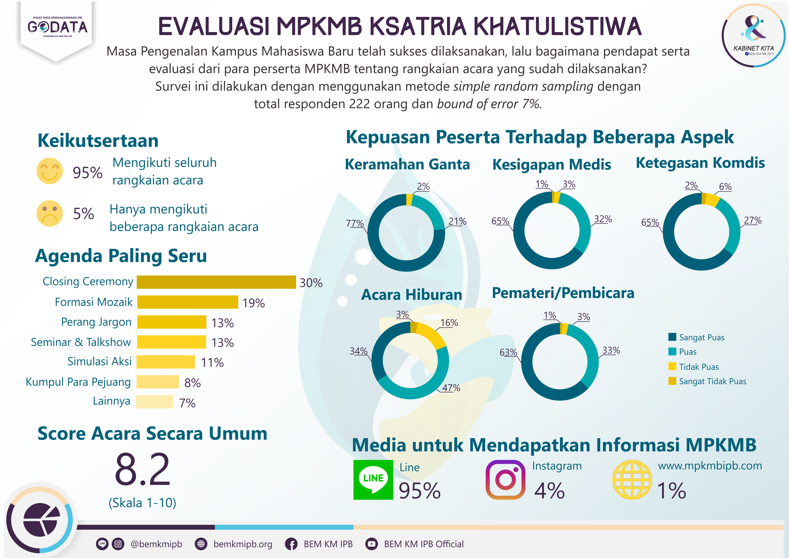

Masa Perkenalan Kampus Mahasiswa Baru IPB (MPKMB IPB) merupakan kegiatan awal bagi setiap mahasiswa baru yang telah resmi terdaftar di IPB. Agenda tahunan ini merupakan acara penyambutan terbesar untuk mahasiswa baru yang diselenggarakan setiap tahunnya di IPB. Melalui rangkaian kegiatan MPKMB ini, para peserta akan memahami nilai-nilai luhur IPB, menanamkan rasa cinta pertanian, hingga akan mengetahui seluk beluk kehidupan kampus yang akan menumbuhkan rasa kecintaan para mahasiswa baru terhadap IPB.
Hingga tahun 2017 ini MPKMB telah terlaksana sebanyak 54 kali. Kegiatan MPKMB 54 tahun ini terkesan berbeda dari tahun sebelumnya. Tema yang diangkat pada MPKMB 54 ini adalah Negeri Dwipantara. Melalui pelaksanaan rangkaian kegiatan MPKMB 54 ini, harapannya para peserta dapat memahami nilai-nilai berkembang, berkolaborasi, dan berdampak serta mampu menerapkannya dalam kehidupan sehari-hari. Rangkaian acara MPKMB 54 ini berlangsung selama 5 hari, dimulai dari 13 Agustus 2017 hingga 17 Agustus 2017.
Setelah rangkaian kegiatan MPKMB 54 ini berakhir, Biro Riset dan Pengembangan IPB bekerjasama dengan panitia MPKMB 54 menyelenggarakan survei akhir kegiatan (post event survey) MPKMB 54. Survei ini dilaksanakan bertujuan untuk mengetahui penilaian peserta MPKMB 54 terhadap keseluruhan rangkaian kegiatan MPKMB 54. Hasil survei ini akan digunakan sebagai bahan evaluasi untuk semua pihak yang terlibat agar terwujud rangkaian MPKMB yang lebih baik di tahun selanjutnya. Survei ini melibatkan 222 responden yang terpilih secara acak dari 2.387 peserta MPKMB 54. Adapun indikator yang menjadi tolak ukur penilaian peserta MPKMB 54 diantaranya adalah keikutsertaan peserta dalam rangkaian acara MPKMB, agenda paling seru, serta kepuasan peserta terhadap beberapa aspek (keramahan genta, kesigapan medis, ketegasan komdis, acara hiburan, dan pemateri/pembicara).
Berdasarkan hasil survei yang dilakukan, hampir keseluruhan responden mengikuti seluruh rangkaian acara MPKMB 54, yaitu sebanyak 95%. Sebanyak 5% responden lainnya hanya mengikuti beberapa rangkaian acara dikarenakan alasan sakit. Mayoritas responden mengaku sangat puas terhadap keramahan Ganta atau pendamping kelompok (77%) dan puas (21%) terhadap keramahan Ganta. Hanya sebagian kecil responden (2%) yang mengaku tidak puas terhadap keramahan Ganta. Tingkat kepuasan yang tinggi juga dirasakan responden terhadap kesigapan medis. Mayoritas responden (64%) mengaku sangat puas dengan kinerja tim medis dan sebanyak 32% lainnya mengaku puas terhadap kesigapan medis. Sebanyak 65% responden mengaku sangat puas terhadap ketegasan komdis dan 27% lainnya mengaku puas terhadap ketegasan komdis. Namun masih terdapat sejumlah responden yang mengaku tidak puas dan bahkan sangat tidak puas terhadap kesigapan medis dan ketegasan komdis. Dari hasil survei yang diperoleh mayoritas responden memiliki tingkat kepuasan sangat puas terhadap Genta, Medis, dan Komdis. Hal ini patut dipertahankan dan ditingkatkan di pelaksanaan rangkaian acara MPKMB di tahun selanjutnya.
Melihat tingkat kepuasan responden terhadap acara hiburan, selama rangkaian kegiatan MPKMB 54 berlangsung, sebanyak 47% responden mengaku puas terhadap hiburan yang disajikan, sementara 34% lainnya merasa sangat puas, 16% responden merasa tidak puas, dan 3% lainnya merasa tidak puas dengan acara hiburan yang disaksikan. Jika melihat dari tingkat kepuasan responden terhadap pemateri/pembicara, sebanyak 63% mengaku sangat puas, 33% lainnya mengaku puas, dan sisanya mengaku tidak puas (3%) dan sangat tidak puas (1%) terhadap pemateri/pembicara. Hal ini dapat dijadikan evaluasi bagi pelaksanaan MPKMB di tahun selanjutnya, agar dapat membawa ide, konsep, maupun solusi baru untuk meningkatkan kepuasan peserta MPKMB terhadap rangkaian acara MPKMB ini, seperti memberikan jenis hiburan yang unik serta pemateri/pembicara yang inspiratif atau dari segi pemaparan materi yang interaktif. Urutan agenda dalam rangkaian MPKMB 54 selama 5 hari berlangsung, dimulai dari yang paling diminati peserta, adalah Closing Ceremony, Formasi Mozaik, Perang Jargon, Seminar dan Talkshow, Simulasi Aksi, dan terakhir Kumpul Para Pejuang.
Sebanyak 95% responden mengatakan bahwa media untuk mendapatkan informasi seputar MPKMB 54 merupakan social media LINE. Sedangkan sebagian lainnya (4%) mendapatkan informasi seputar MPKMB dari Official Account Instagram dan dari website MPKMB sebesar 1%. Hal ini menunjukkan bahwa Official Account LINE merupakan media yang efektif dalam menyampaikan informasi khususnya informasi seputar MPKMB 54. Namun begitu, media informasi lainnya perlu ditingkatkan keberadaanya seperti Website www.mpkmbipb.com dan official account instagram @mpkmbipb. Secara keseluruhan, penilaian responden terhadap pelakasanan rangkaian kegiatan MPKMB 54 ini tergolong baik, yaitu sebesar 8.2 dari skala 1-10.
-kenny-